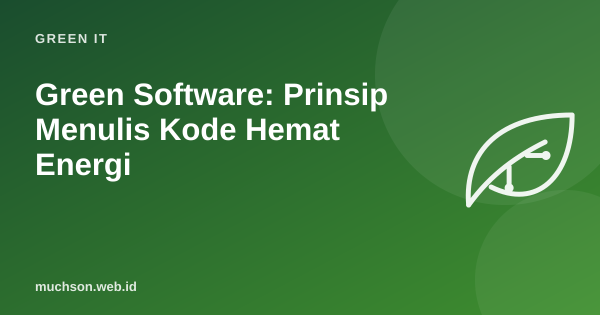

Green Software: Prinsip Menulis Kode Hemat Energi
Developer jarang memikirkan listrik, karena server ada di tempat lain dan tagihannya dibayar orang lain. Padahal keputusan kode, seperti query yang boros, gambar yang terlalu besar, atau server yang selalu menyala, berdampak pada energi dan emisi. Green Software Foundation merumuskan prinsip agar software lebih hemat karbon.

Tiga cara mengurangi emisi software
Mengukur: Software Carbon Intensity (SCI)
SCI adalah spesifikasi dari Green Software Foundation yang telah diadopsi menjadi standar ISO/IEC 21031:2024. Ia mengukur emisi per unit kerja yang bermakna, sehingga bisa dibandingkan dari versi ke versi.
SCI = ((E × I) + M) per R
E = energi yang dipakai software (kWh)
I = intensitas karbon listrik (g CO₂e per kWh) di lokasi dan waktu itu
M = emisi tersemat (embodied) perangkat keras, dialokasikan ke software
R = unit fungsional: per pengguna, per permintaan API, per transaksiPraktik di kode dan arsitektur
Hijau sekaligus hemat
Banyak langkah green software sama dengan langkah menghemat biaya cloud dan mempercepat aplikasi. Ini membuat argumennya mudah diterima tim dan manajemen.
Prinsip lain dari Green Software Foundation
- Ukur: yang tidak diukur tidak bisa diperbaiki.
- Efisiensi jaringan: kurangi data yang berpindah.
- Demand shaping: sesuaikan perilaku aplikasi dengan ketersediaan energi bersih, misalnya mode hemat saat intensitas tinggi.
- Komitmen iklim: pahami perbedaan klaim kompensasi karbon dan pengurangan emisi nyata.
Tanya jawab
Apakah bahasa pemrograman tertentu lebih hijau?
Ada penelitian yang membandingkan energi antar bahasa untuk tugas tertentu, tetapi untuk sebagian besar aplikasi web, desain arsitektur, query, dan data yang dikirim jauh lebih berpengaruh daripada pilihan bahasa.
Bagaimana mengukur energi aplikasi saya?
Mulai dari perkiraan dengan alat seperti Cloud Carbon Footprint atau dasbor emisi penyedia cloud, lalu ukur lebih detail di server dengan alat pemantau energi bila perlu.
Apakah developer perlu sertifikasi khusus?
Tidak wajib. Green Software Foundation menyediakan materi belajar gratis tentang prinsip green software.
Sumber dan bacaan lanjut
- Green Software Foundation: Software Carbon Intensity (SCI) Specification
- Green Software Foundation: Principles of Green Software Engineering
- Index database (artikel terkait)